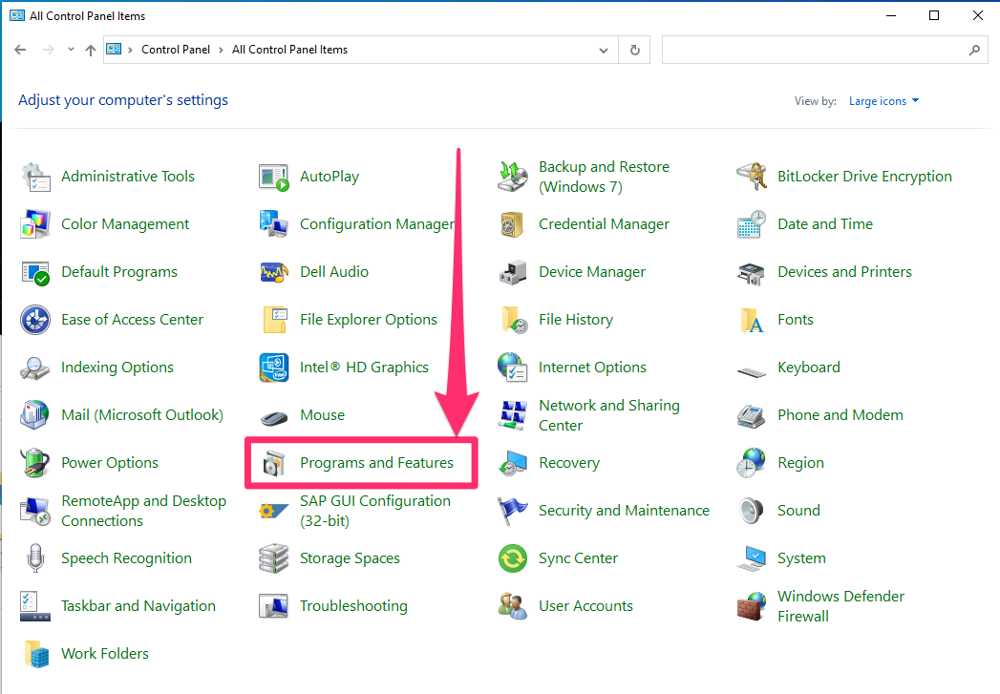
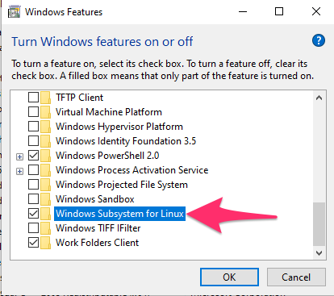

Installing Bash for Windows
What is Bash?
Bash is a specific command line system. Its commands are standardized in macOS and Linux operating systems, but unfortunately, Windows' default command line has always used a different set of commands. However, it is possible to use bash in Windows 10 if you follow a few steps.
If you are using a Windows computer in this course, I would highly recommend doing this, since it will make the content of the course notes and lectures line up with what we're doing in class.
Steps within Windows
1. Launch Control panel
Launch Control Panel by searching for it in the start bar.
2 Go to Programs and Features
It might also be just called "Programs"

3 Inside Programs and Features, go to "Turn Windows features on or off"

4. In the window that appears, scroll down to find "Windows Subsystem for Linux" and click the box, then press ok.

5. Allow your computer to restart.
Your computer needs to restart at this point for the rest of the process to work. A window should pop up asking if you want to restart now, just to make things go quicker.
6. Launch the Windows Store, and search for "Ubuntu".
You can launch the Windows Store by searching in the start bar. Once you've gotten the store page for Ubuntu pulled up, go ahead and "Get" it.

Inside Ubuntu
There are a few more steps to follow once Ubuntu is installed.
1. Launch Ubuntu
You find it by searching for it in the start bar. When you first open it, it may say it is installing things for a few moments.
2. Set a username
This will be your username for Ubuntu. It doesn't have to be the same as your Windows username, but you might as well make it the same just to keep things easy. Just type in the username you want, and hit enter.
3. Set a password
You'll be asked to set a password. You will not see the letters as you are typing, and the cursor won't move, but it is working.
Type in the same password again to confirm it, and you're good to go!
Navigating to your files.
Unfortunately, your home directory in Ubuntu is in a kind of strange place. But, you can get to your normal files with the following:
cd /mnt/c/Users
Once you've gotten to the Users directory, run ls to find the directory with your username. Then cd into it, and you'll find all your files.